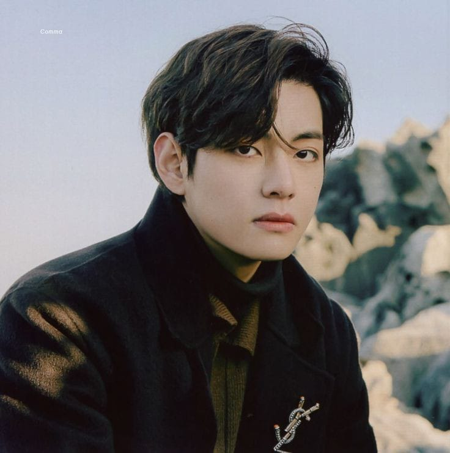

Historia do Kim Taehyung
Kim Taehyung, mais conhecido pelo seu nome artístico V, é um cantor, compositor e ator sul-coreano. Ele nasceu em 30 de dezembro de 1995, em Bisan-dong, Daegu, Coreia do Sul. V é um dos membros do grupo sul-coreano BTS, que se tornou um fenômeno global e uma das bandas de maior sucesso na história da música.
Biografia:
V começou sua carreira musical em 2013, quando o BTS debutou sob a Big Hit Entertainment. Desde então, ele tem sido uma figura central no grupo, conhecido por sua voz única e estilo visual carismático. V também é conhecido por seu talento em composição e frequentemente contribui para as músicas do BTS. Além de sua carreira musical, ele também atuou em dramas, como "Hwarang: The Poet Warrior Youth".
Primeira Música Solo:
A primeira música solo oficial lançada por V foi "Scenery", que saiu em janeiro de 2019. A canção foi lançada como parte de um projeto de mixtape que V estava trabalhando. "Scenery" é uma balada suave que destaca a habilidade vocal de V e suas habilidades como compositor, refletindo sobre a beleza e a transitoriedade da vida.
V tem continuado a trabalhar em projetos solo, além de sua atividade com o BTS, mostrando seu crescimento como artista e sua versatilidade na indústria musical.
Música Famosa Solo:
Uma das músicas solo mais famosas de V é "Sweet Night 🔗", lançada em março de 2020 como parte da trilha sonora do drama "Itaewon Class 🔗". A canção recebeu elogios por sua melodia suave e pela emotividade da interpretação de V. A música se destacou nas paradas musicais globais e, a partir do seu lançamento, conquistou uma grande base de fãs.